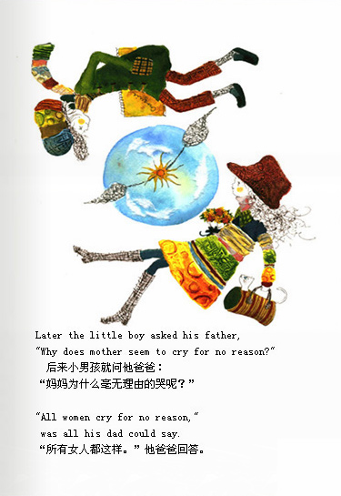
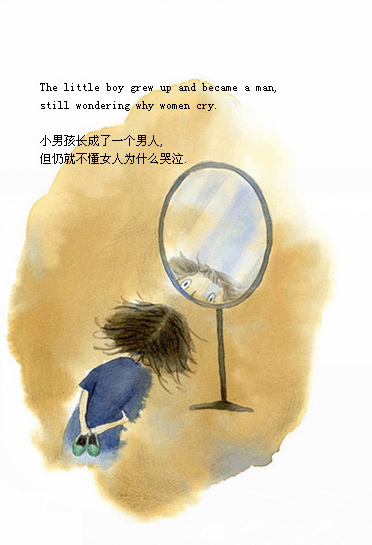
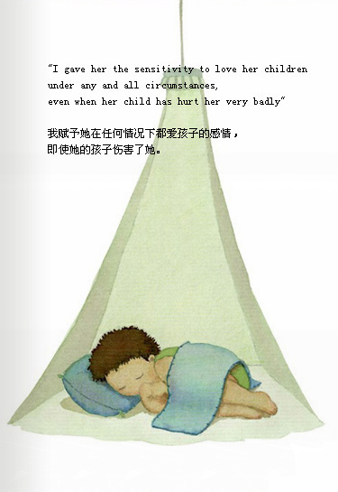
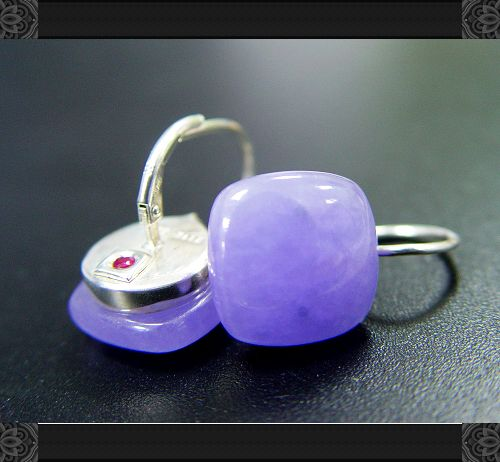

Easter澳洲第一峰摄影手记 - jiajialing @ Apr 17, 2007
前两天hank说他和jiajia去哪儿哪儿玩的，当时在忙没时间多聊，今天看了jiajialing msn space上Easter澳洲第一峰摄影手记，真TMD棒，那些照片！过两天我也要上些PP：）
前两天hank说他和jiajia去哪儿哪儿玩的，当时在忙没时间多聊，今天看了jiajialing msn space上Easter澳洲第一峰摄影手记，真TMD棒，那些照片！过两天我也要上些PP：）








刚过下班时间，工作间隙上来冒个泡~~前几年闲够了，这段时间忙碌得象只工蚁，确认这之后的日子会更忙！每天新的事情不断冒出来需要处理，每天都担心是不是遗漏了哪个细节，忙碌象飙车一样使肾上腺素速增~
忙碌使人烦躁；
忙碌使人充实；
忙碌使人沉静；
忙碌使人无奈；
忙碌可以抵御烦恼；
忙碌是否能带来预期的收益？
两周下来，就一个字“忙”。
有个MM问我每天为什么都走的那么晚，让人怎么回答呢？
不知道为什么这段时间工作特别忙，乱七八糟的事总是打断手头的工作，电话、E-MAIL、翻合同写价格，翻合同写价格、E-MAIL，电话......下班回家的路上不停打哈欠，好象积累了一整天的哈欠在那个时刻一起涌上来？！要是有人能送我上下班，也许会睡上一路。难不成处于亚健康状况？
女同事剖腹产下一名7斤多的男孩，孩子的爸爸喜笑颜开地来公司发红蛋。从结婚到生子...速度那个快...孩子随母亲姓...也许没有过多时间思考的人生才会幸福？！都说今年是金猪年，后来说算错了，其实是土猪年。不迷信的人管它是金猪还是土猪，只要是个健康的宝宝就好~一时间公司上上下下常能遇见挺着肚子的准妈妈们，患了流行性感冒似的。电话中问一31岁的单身好友：“急不急啊？看见那么多结婚生子的女人？”“没感觉，她们做什么和我有什么关系呀？！”被一个男人忠心深爱的准妈妈才是幸福的。反之，则与《Pan's Labyrinth》中怀有身孕的卡门一般给人以悲哀。
说到悲哀，没有比春暖花开之即没精力外出拨弄相机更悲哀的了。有人在三月中旬特地去江西婺源看油菜花。江宁的某条马路边有一小簇黄色油菜花，虽比不上婺源的壮观，自我安慰一下算是看过了。什么时候“忙”才是尽头呢？
向洪晃的杂志社发了电子邮件，打算订购全年《ＩＬＯＯＫ》和《无目的美好生活》。如果天下杂志都一个样，我宁愿订购洪晃的杂志。谁让她个人魅力大，骂人刻薄不留情面呢~~
邮件刚刚发出，看看他们的工作效率如何。您若有兴趣也可以联系。
电话：010-64362098-611
电邮地址：jing.wang@cimgchina.com
哎呀，回复速度那是相当的快，工作效率惊人，刚发了这篇博，回信就到了，估计是自动回复咯？！回复如下：
如果您订阅全年的世界都市，我免费送给您《无目的美好生活》，您需要通过邮局汇款：北京市大山子邮局80号信箱 100015 负责人收，一共是200元，现在赠送的礼品是MB的化妆品，或者您可以拨打免费订阅热线8008106586，谢谢！
《城里的月光不再》
你抽的烟，让我找遍，镇上的店
一个美且静的女子，这样用力的爱，终究也只是伤了自己。

上周似乎是工作上最忙碌的一周，每天下班后毫无精神，吃过晚饭就想睡觉，一下班哈欠便接连不断地开始了。上周也是春天到来后温度最高的一周，户外出现一些穿着短袖的年轻人。万物蓬勃生长，暖冬给了害虫和老鼠良好的生存环境。春天带来又一次生命的延展，人们体内各种欲望蠢蠢欲动，象空气般游走。美好的，纯情的，愚蠢的，丑陋的......真实而无可阻挡。
上周...听一个朋友娓娓道来，爱与幸福还在，只是内心有支撑不起的激情与热情。两年多没有夫妻生活，象大多数人的婚姻一般患上了阳痿。由不顾一切的爱情到难以割舍的相伴，身体却不再对对方敏感、渴望，转而需要新鲜的东西填补进来。朋友若有所思自言自语道：“还是要去这么做的，一定要试着去做。”做爱，由衷地做爱，对婚姻究竟有多重要？大多数人在伪生活中挣扎，也有将伪生活粉饰得光鲜亮丽，如真的一般引来羡叹。我们会心一笑...那还是伪生活！大多数人按约定俗成的线路在现实中行走，象模象样，看似幸福地结婚、怀孕、生子。想到“谁都有秘密”，想起某人BLOG里写着“谁都有点破事”，恐龙那句“或许网络的背后是一只会打字的狗”，不知道真相，便可继续看似幸福的生活，难道你不是吗？
有个朋友说：“你只是看到别人光鲜亮丽的一面，想象又夸大了这种光鲜亮丽。不好的你只是不了解而已。了解的你也知道那是虚伪地表演。你说总和差的人相比不会进步，其实进步什么的都是虚的，自己快乐才是真的。”此时此刻想戴上耳机听着音乐漫无目的地在黑夜中行走。
笑话一则：
老师问学生：“虫牙、烂萝卜，怀孕的共同点是什么？”
全班只有两个学生有答案，一个得了80分，一个得了100分。
80分的答案：都是虫子惹的祸。
100分的答案：都拔得太慢。
如果我对玉兰树的认识是正确的，这就应该是玉兰花吧？
难得见到黄色的玉兰花，第二天中午带了相机拍下它。
南京的天空没有这么澈蓝，自动白平衡之后也可以让人“蓝”得动心。
谈到植物，今早晨广播节目里介绍转基因大豆，现在要给南京的法国梧桐树做转基因实验，直白地讲就是要它不孕，不会结出果实，没有果实每年春天就不会飘小小的降落伞了，这种降落伞上的毛毛非常惹人厌，钻到鼻子里，或迷了眼睛，尤其对鼻炎及过敏性的人危害很大。动物绝育展延到为植物绝育，真绝。人类什么事情干不出来？


饰品中尤其喜欢耳环。
第一次戴这副耳环很乡土气，衣服与耳环不和谐。
昨天穿了淡紫色竖条纹衬衣+黑色夹克式皮衣+咖啡色灯心绒短裙；
今天是淡紫色大领口体恤+淡紫色条纹围巾+黑色夹克式皮衣+牛仔裤。
很享受由糖果般的它带来的搭配：）
很多饰品的美有了搭配才突显出精彩。

这段时间住在湖南路，每天上班选择路线成了重要的问题。
从湖南路到江宁，究竟哪条路最省时间呢？
选择一：玄武湖隧道-九华山隧道-龙蟠中路-城东干道.....几乎每次都需要40~50分钟，还必须见缝插针的抢路走。昨天居然在香格里拉十字路口等了6、7个90秒的红灯，20分钟过去了，汽油消耗了多少？
选择二：模范马路-城西干道-高架-江宁，将近25分钟，一路虽然车多，只要不出现塞车情况，道路一般是畅通的，并且高架上没有红绿灯。
常规思维下我们总会选择最短的路线到达目的地，尤其没有驾驶经验的人会认为这样既省油又省时。可是交通状况糟糕的话，这条线路就会变成既不省油又不省时的路线。我更倾向走交通状况好的路线，即使距离比其它线路长，事实上匀速行驶比走走停停未必消耗更多汽油咯。不信，可以测试一下。
不得不承认这段驾驶体会让我有点厌恶开车了。
**为什么有的女人话总是很多？一件小破事能描述1000个句子出来。有她在就不会有冷场的时候。这种能力从年轻的时候就具备了，看来和岁月没什么关系。
**婚姻让一个人上了天堂，另一个人下了地狱？